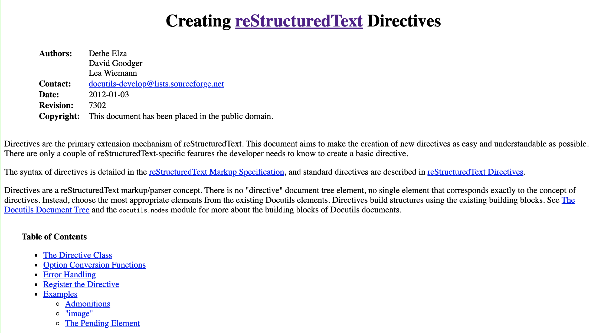

Code that you’re not ashamed of
Code that works
Code that looks good
😰
Tools to help you write confidently!
Static
type("100") # -> <class 'str'>
type(100) # -> <class 'int'>
Dynamic
word = "hi"
word = 100
>>> a = Something()
>>> b = AnotherThing()
>>> a.mysterious_method(b)
Traceback (most recent call last):
...
TypeError: element index must be an integer, a slice, or
an attribute name string
😡
One document → slides & handouts
Implemented with Sphinx…
…which is implemented with docutils

(This goes on for a while)
def add_data(container, data):
"""Add data to container."""
container.append(data)
return container
def add_data(container: List[str], data: str) -> List[str]:
"""Add data to container."""
container.append(data)
return container
raw = get_event_from_google()
event_attrs = {}
if owner_data := raw.get("owner"):
event_attrs["owner"] = User(
owner_data.name,
owner_data.email,
...,
)
# ...etc
event = Event(**event_attrs)
from pydantic import BaseModel
class Event(BaseModel):
id: str
summary: str
>>> data = get_event_from_google()
>>> Event.parse_obj(data)
<Event id="blah" summary="This is great">
from pydantic import BaseModel
class User(BaseModel):
name: str
email: str
class Event(BaseModel):
id: str
summary: str
owner: User
>>> data = get_event_from_google()
>>> event = Event.parse_obj(data)
>>> event.owner
<User name="ashley" email="ashley@hackbrightacademy.com">
my_dict = {
"key": [
"very",
"nice",
"value",
"hi",
"wow this is great"
],
}
my_dict = {'key': ['very', 'nice', 'value', 'hi', 'wow this is great']}
Office hours: https://calendly.com/hb-ashley